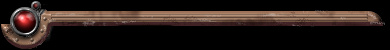

|

2013.07.06 More Screenshot Section Updates
It's been 8 years and everything's deader than
dadaism around here, but I thought I'd be a nice guy and fix all the
long broken links that have been around forever and even upload some
new(ish) concept art.
2005.07.13 Screenshot Section Updates
A lot more concept art is posted.
2005.07.05 Faction Sections are functional
Now you can read up on a lot more info about the
Risen
factions.
2005.03.02 Second Attempt at First News
Finally some sort
of a shell of a website is
up. But
do go ahead and take a look around. It'll be great!
|
Obligatory right
panel
|